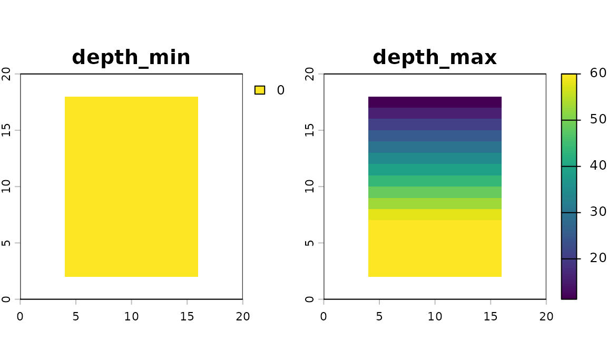
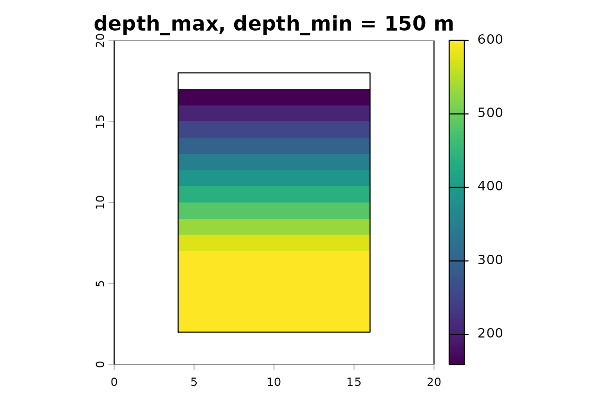
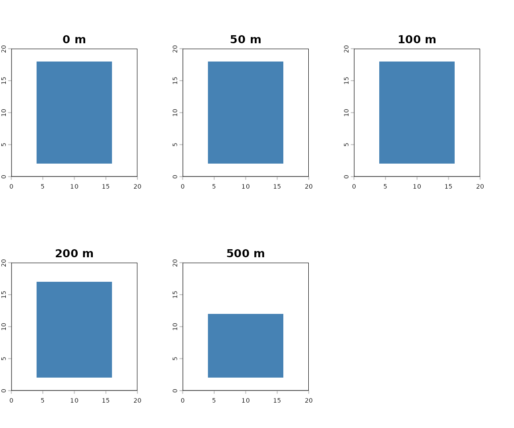
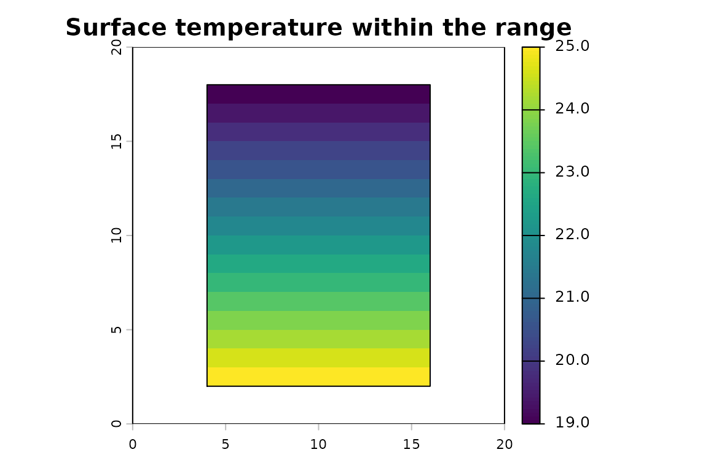

ocean3d analyses marine habitat in three dimensions: area and depth. It can represent things like species ranges, fisheries and oceanographic variables in 3D, so they can be overlapped, masked and summarised by depth. ocean3d does this by representing space with a stacked raster representation, which will be explained further in the next section.
Extracting 3D Values Within a Species’ 3D Range
This article walks through one core operation of the package: taking a species range polygon, convert it to 3D, and read the values from a 3D (raster stack by depth) oceanographic dataset.
| Object | What it is |
|---|---|
SpatEnvelope |
The species’ 3D range. Two layers, depth_min and
depth_max; depth is the cell value, so the
vertical interval varies per cell. |
SpatVoxel |
The environmental raster. One layer per standard depth, named
{variable}_depth={value}; depth is the layer
index. |
In this Getting Started vignette, we use small synthetic representative datasets. Therefore, this requires no downloads and no local data files, with grids that are small enough to print, so you can follow every step. The articles listed at the end apply the same workflow to real data.
Step 1: A study grid and a seafloor
Example data. Steps 1 and 2 build synthetic stand-ins for the inputs a real analysis downloads. In practice the seafloor comes from GEBCO (
load_gebco_bathymetry()) and the environmental raster from the World Ocean Atlas (woa_download(),woa_load_nc()).
The study grid defines the geometry everything else is aligned to. The seafloor is depth in positive metres increasing downward, which is the package’s convention. GEBCO’s elevation values have to be flipped.
grid <- terra::rast(
nrows = 20, ncols = 20,
xmin = 0, xmax = 20, ymin = 0, ymax = 20,
crs = "EPSG:4326"
)
# A shelf that deepens from north to south, 20 m down to 900 m.
seafloor <- terra::rast(grid)
terra::values(seafloor) <- rep(seq(20, 900, length.out = 20), each = 20)
terra::plot(seafloor, main = "Seafloor depth (m)")Step 2: A WOA-shaped environmental raster, as a
SpatVoxel
World Ocean Atlas data products are organized as one layer per
standard depth. Here, this shape is built by hand as example data. This
synthetic dataset shows temperature decreasing with depth, on a
latitudinal gradient. as_voxel() attaches the layer names
and validates the depth axis. With real WOA data,
woa_load_nc() reads in the depth layers.
standard_depths <- c(0, 50, 100, 200, 500)
lat <- terra::init(terra::rast(grid), "y")
t_layers <- lapply(standard_depths, function(d) 26 - 0.03 * d - 0.4 * lat)
# This works with the woa_load_nc() return as input as well
t_annual <- as_voxel(
terra::rast(t_layers),
depths = standard_depths,
varname = "t_an"
)
names(t_annual)
#> [1] "t_an_depth=0" "t_an_depth=50" "t_an_depth=100" "t_an_depth=200"
#> [5] "t_an_depth=500"depths() reads that axis back out. This is the helper
function that returns the numeric depths rather than the layer
names:
depths(t_annual)
#> [1] 0 50 100 200 500Step 3: The species range polygon, as a
SpatEnvelope
vect_to_envelope() rasterises the polygon onto the study
grid and attaches the depth limits, giving the species’ 3D domain. For
real data, the polygon is a species range map, e.g. from the IUCN Red
List Spatial Download, with the depth limits coming from its IUCN Red
List assessment (fetch_species_assessments()).
The seafloor is not a special argument, and is treated as simply one
more depth_max constraint. Per cell the
shallowest depth_max wins, so a species
with a 600 m limit is clamped to the seabed, in any cells where the
seabed is shallower than the species depth_max.
poly <- terra::vect(
"POLYGON ((4 2, 16 2, 16 18, 4 18, 4 2))",
crs = "EPSG:4326"
)
range_env <- vect_to_envelope(
polygon = poly,
template = grid,
depth_min = 0,
depth_max = list(600, seafloor)
)
range_env
#> class : SpatRaster
#> size : 20, 20, 2 (nrow, ncol, nlyr)
#> resolution : 1, 1 (x, y)
#> extent : 0, 20, 0, 20 (xmin, xmax, ymin, ymax)
#> coord. ref. : lon/lat WGS 84 (EPSG:4326)
#> source(s) : memory
#> names : depth_min, depth_max
#> min values : 0, 112.631579
#> max values : 0, 600Depth is the cell value here, and the interval is per cell — the northern rows are clamped to a shallow bed, the southern rows reach the full 600 m:
terra::plot(range_env)
Cells where the bed sits above depth_min have no water
column left and drop out entirely. A species living below 150 m cannot
occupy the northernmost row of the polygon, where the bed is only about
113 m deep:
deep_env <- vect_to_envelope(
polygon = poly,
template = grid,
depth_min = 150,
depth_max = list(600, seafloor)
)
# Occupied cells: the full polygon, then the deeper-living species.
sum(!is.na(terra::values(range_env[["depth_max"]])))
#> [1] 192
sum(!is.na(terra::values(deep_env[["depth_max"]])))
#> [1] 180
Step 4: Put the envelope on the voxel’s depth axis
The envelope and the voxel store depth in different roles, so they
cannot be combined directly. envelope_to_voxel()
re-expresses the envelope on the voxel’s depth levels, giving a
1/NA occupancy voxel with one layer per
depth.
Each depth level stands for a slab of water, not a single depth. WOA
levels stand for the water halfway to their neighbours, so
bounds = "midpoint" is the convention to use with WOA data.
See vignette("depth-levels", package = "ocean3d") for how
slabs are placed and why it matters.
occ <- envelope_to_voxel(
range_env,
depths = depths(t_annual),
bounds = "midpoint"
)
# Cells occupied at each standard depth.
terra::global(occ, "sum", na.rm = TRUE)
#> sum
#> presence_depth=0 192
#> presence_depth=50 192
#> presence_depth=100 192
#> presence_depth=200 180
#> presence_depth=500 120
Step 5: Read the values inside the range
With both objects on the same depth axis, masking can use
terra::mask():
in_range <- terra::mask(t_annual, occ)
names(in_range)
#> [1] "t_an_depth=0" "t_an_depth=50" "t_an_depth=100" "t_an_depth=200"
#> [5] "t_an_depth=500"The layer names are maintained, so that a single depth can still be pulled out by name. For example, sea surface temperature within the range:
sst <- in_range[["t_an_depth=0"]]
summary(terra::values(sst, na.rm = TRUE)[, 1])
#> Min. 1st Qu. Median Mean 3rd Qu. Max.
#> 19.0 20.5 22.0 22.0 23.5 25.0
Vertical profile
depths() also accepts a character vector, making a
per-layer terra::global() result easy to turn into a
profile.
per_depth <- terra::global(in_range, c("mean", "min", "max"), na.rm = TRUE)
per_depth$depth <- depths(rownames(per_depth))
per_depth$n_cells <- terra::global(!is.na(in_range), "sum", na.rm = TRUE)[, 1]
per_depth[, c("depth", "n_cells", "mean", "min", "max")]
#> depth n_cells mean min max
#> t_an_depth=0 0 192 22.0 19.0 25.0
#> t_an_depth=50 50 192 20.5 17.5 23.5
#> t_an_depth=100 100 192 19.0 16.0 22.0
#> t_an_depth=200 200 180 16.2 13.4 19.0
#> t_an_depth=500 500 120 8.2 6.4 10.0The cell count falls with depth: the range is clamped to the bed, so the northern rows drop out of the deeper levels.
Step 6: Collapsing back to an envelope
voxel_to_envelope() is the return trip: it reduces a
voxel to the envelope bounding it. A predicate decides what counts as
present, so it can bound a subset of the values rather than just the
data extent — here, the depths over which the range is warmer than 20
°C:
warm <- voxel_to_envelope(in_range, fun = function(x) x > 20)
range(terra::values(warm[["depth_max"]]), na.rm = TRUE)
#> [1] 0 100This conversion is lossy, so a round trip through
envelope_to_voxel() does not give back the voxel you
started from:
- An envelope holds one continuous interval per cell, so any interior
gap in the voxel is filled in — a cell satisfying the predicate at 0 m
and 200 m but not at 100 m still comes back as
[0, 200]. - The envelope records depth levels, not the slabs they stand
for. A cell warm only at the 0 m level comes back as
[0, 0], although that level stands for 0–25 m of water. Expanded again, such a zero-thickness interval occupies no slab at all, and the cell is lost.
Where either matters, stay in the voxel.
Summary
Once the inputs are loaded, the whole workflow is two calls:
# 1. the species' 3D range
range_env <- vect_to_envelope(poly, grid, depth_min = 0,
depth_max = list(600, seafloor))
# 2. the values inside the range
in_range <- terra::mask(t_annual, range_env, bounds = "midpoint")The second is the one line to reach for whenever a voxel needs
restricting to a species’ per-cell depth window.
terra::mask() is depth-aware for the package’s 3D classes:
it places the envelope on the voxel’s own depth levels, as
envelope_to_voxel() did by hand in Step 4, and masks layer
by layer.
To restrict a voxel to a polygon and a single depth band across the
whole area instead — no per-cell window — use
extract_to_area().
Next steps
These articles apply the workflow to real data. They download data or need API keys, so they are on the package website rather than installed with the package:
- Extracting 3D Environmental Data for a Single Species — an IUCN range and World Ocean Atlas 2023 climatologies.
- Depth-Stratified Fishing Effort from Global Fishing Watch — Global Fishing Watch effort by gear type, overlapped with a species range.
-
3D
Volume Overlap Between Species and Fisheries —
calc_volume_overlap()on species ranges and fishery footprints.
Feedback and contributing
ocean3d is new and under active development, so feedback from first-time users is especially valuable. If something in this vignette was unclear, a function did not behave as you expected, or there is functionality you wish existed, please open an issue on GitHub Issues. A small reproducible example makes bugs much quicker to fix.
Contributions are welcome, from fixing a typo to adding a new workflow. If you have written code for 3D marine analyses that others could reuse, adding it to ocean3d broadens its impact. See the contributing guide for how to get set up, and the good first issues for places to start. Please note that ocean3d is released with a Contributor Code of Conduct; by contributing, you agree to abide by its terms.